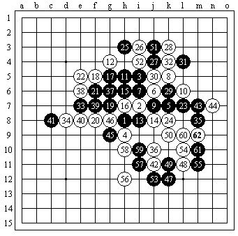

大峡月列传（妖刀九传之七）
#1 <font color="Fuchsia">大峡月列传（妖刀九传之七）</font> 作者：失落刀 发表时间：2008-11-15 16:27:01

期待分析该局（大峡月）。
［本站用户 竹子 于 2009-3-2 23:03:10 花5个金币送您鲜花一朵］
#2 Re:大峡月列传 作者：潇洒 发表时间：2008-11-15 16:42:18
某段时间三手最流行的妖刀开局。。目前被认为黑大优甚至黑必胜。。所以下的人变少了。。#3 Re:大峡月列传 作者：浪人痴痴 发表时间：2008-11-15 16:58:40
慢棋,没走出来黑必胜!~
#4 Re:大峡月列传 作者：袜子破个洞 发表时间：2008-11-15 18:42:36
这个未必黑大优吧。可能是我孤陋寡闻了。
#5 Re:大峡月列传 作者：wrwak 发表时间：2008-11-15 20:42:22
一打都没胜 强防多多#6 Re:大峡月列传 作者：失落刀 发表时间：2008-11-16 21:45:34
5楼的，发几个一打没有杀的4看看。#7 Re:大峡月列传 作者：wrwak 发表时间：2008-11-16 21:55:34
还有那个猥琐海底捞月
#8 Re:大峡月列传 作者：失落刀 发表时间：2008-11-16 22:14:07
回7楼，这样呢。
#9 Re:大峡月列传 作者：wrwak 发表时间：2008-11-16 22:17:15
455454546546#10 Re:大峡月列传 作者：失落刀 发表时间：2008-11-16 22:47:37
#11 Re:大峡月列传（妖刀九传之七） 作者：失落刀 发表时间：2008-11-18 20:20:07
牛奶（黑）棋情（白）第六局 妖刀（大峡月）
妖刀虽不属于26种职业开局，却是广大网络五子棋爱好者喜闻乐见的局面。它的存在大大丰富了五子棋的变化。在长时间的使用中，特别近年来在CEG，CVG，四棋一牌大师赛等网络奖金赛的刺激下，妖刀研究有了长足的进展。确定了一些初步的定式和各刀局优劣评判。象本局的大峡月，就是公认的黑优局。而棋情和牛奶正是使用妖刀开局的个中翘楚，对本局变化的拆解都相当深入。到白8也可以说是妖刀定式一型，出自棋情的研究。黑9不太常见，一般走I10，实战招法估计是出于对局心理。彼此都很熟悉，正招的效果也不见得有多好，出奇方能制胜。不过这个黑9稍有问题，感觉有些偏于一隅。针对黑9，白10是好手，压缩黑的空间的同时抢占外围。11到15交换，大致两分，白16防，黑17，19有些骗招的味道，白20如果就在左边动手进攻如走F7，黑活三反击可胜。白识破意图，20防得很老实。这里很见忍耐功夫，从心情上说，就算防，也是I5看着更眼热。黑21本局败招，或者是因为20走得本分，黑棋起了欺负下白棋的心思。21过于追求效率，想要攻守兼备。被白22一做败势立显，以下的过程已经没有意义，到42，黑投子。本局也是棋情好局，进退有度，攻防合理，最终诱使黑方走出败招。充分表现出了其行棋严谨的一面。
共42手 白胜
无伤评论。
#12 Re:大峡月列传（妖刀九传之七） 作者：失落刀 发表时间：2008-11-18 20:27:34
棋情（黑）牛奶（白）第八局 妖刀（大峡月）
八番棋的最终局。黑5手是另一个选择，白6黑7流行应法。白8是强防之一，用意是先占好点，逼黑进攻，期待反击。黑9不急，防住要点积蓄力量。白10破黑的棋形，希望包住黑棋，黑11再做一手，12从下面防住，尽量把对方的棋子限制在窄的一边。13不依不饶还是做棋，这一带黑走得很有弹性，引而不发。白棋主动出击交换定型，到18必然。19是黑在这个局部做棋的好点，20唯一防，21活三，22还是唯一防。白棋如愿把黑包了进去，已成鱼死网破的局面。胜负的关键就在于下边黑棋是不是能杀。盘面有如一道习题，据说当时旁观众人，大多认为黑棋不妙。棋情在长考了10分钟之后，走出了23！好手！！真是石破天惊的一击！而这也成为了本次八番棋战的最后一手。本局的精彩不用我多说，作为八番棋战的点睛之作，诚然是完美的谢幕。
共23手 黑棋胜
无伤评论。
#13 Re:大峡月列传（妖刀九传之七） 作者：失落刀 发表时间：2008-11-27 18:04:26
一边在下我一边注意着另外几个阻击目标，wudifs7碰上了已经7连胜的lx_star_222,我暗暗高兴，希望lx_star_222至少能和下来，这样等于我少了个阻击任务。于是转而盯住51of，还是用同样的办法当他下完闲置我就点空位置。可惜这次天不遂人愿，我没能碰上他而碰到了5胜1和的tw~tw__，对手开了瑞，那盘我前半盘还是下得不错的，至中盘白棋已经拿到了先手小有优势。边下我边看大厅里的情况，让我惊讶的是已经7连胜的lx_star_222晚节不保竟然输给了wudifs7，此前wudifs7还赢过1盘，已经5连胜了，那边51of好像对手不强应该也能赢，这下我分身乏术还怎么阻击？心中暗急，不能在无关紧要的棋上浪费时间，马上求和，对手看我中盘白棋优势还求和当然马上同意了。转出来一看wudifs7已经开始第6盘了，走的是斜月3打，他对手显然一点都不会转成了斜月1打的通型。那边51of也快赢下第5盘了。我心急慌忙，不知道阻哪边才好。还是wudifs7赢得快斜月1打大概20多手就搞定了。等他出来我也马上点空位子，老天帮忙总算让我碰到他了。我知道这是我最后的机会，因为他已经6连胜了。不利的是我是先手，他给了斜指。这次比赛差不多成了妖刀大赛，因为联众规则第2手是对手下的，而斜指没有平衡局。好在我比赛下得多边下边积累，最流行的这把妖刀还是挺有信心的。7和9手是个骗如果对手按纯黑石下30手就会挂。但wudifs7显然非常小心，开局每手棋都仔细长考，没有直接走入我预先设定好的圈套。但长考带来的恶果就是他早早地进入了读秒，也许是知道这也是他最后拿全胜ID的机会（前面已经被废的wudifs系列ID一大堆），在读秒声中他显得特别紧张，连续下出了弱手，被我稳稳地拿下。下完这盘他这个ID第8盘干脆不下了，显然7胜1负能进决赛前10对他来说意义不大，他要的就是冠军。我想是非赢不可的紧张心态导致了他这盘后面发挥失常。决赛比得不仅仅是技术，水平相当的棋手心理往往能决定胜负。作者：酷妞
#14 Re:大峡月列传（妖刀九传之七） 作者：木月 发表时间：2008-12-1 21:33:35
大峡月杂现在偶都看不懂呢，哎，造孽啊#15 Re:大峡月列传（妖刀九传之七） 作者：浪人痴痴 发表时间：2008-12-1 21:39:43
木老头.你不是把大峡月终结了嘛!~
#16 Re:大峡月列传（妖刀九传之七） 作者：失落刀 发表时间：2008-12-1 21:52:57
木月最强4的二打没地毯完吧？
#17 Re:大峡月列传（妖刀九传之七） 作者：笑雨辰 发表时间：2008-12-2 1:28:41
一打我都杀不出来
你们都2打地毯了
#18 Re:大峡月列传（妖刀九传之七） 作者：26 发表时间：2008-12-13 22:32:11
求黑5两打点。
#19 Re:大峡月列传（妖刀九传之七） 作者：26 发表时间：2008-12-13 22:32:40
求黑5两打点。
#20 Re:大峡月列传（妖刀九传之七） 作者：26 发表时间：2008-12-13 22:33:17
求黑5打点。
#21 Re:大峡月列传（妖刀九传之七） 作者：26 发表时间：2008-12-13 22:33:58
求黑5两打点。
#22 Re:大峡月列传（妖刀九传之七） 作者：26 发表时间：2008-12-13 22:34:24

求黑5两打点。
#23 Re:大峡月列传（妖刀九传之七） 作者：失落刀 发表时间：2008-12-13 22:56:51
|
关于“大峡月”早在98年的邀请赛上就见有棋手下过。当时的规则允许这种开局，有位北京选手独善此道，不少人碰到没什么办法。结果最后一轮章志强要与其相遇，赛前大家探讨该如何对应，我建议章志强选择拿白棋，发挥防守的强项。赛后跑去问章志强结果如何，章说对手拿黑也不会攻结果被他慢慢磨赢了。 记忆中2001年和刘俊讨论过大峡月，当时彼此的共识是图一的白4应该是最强防。由于，此类布局现实比赛无用武之地，所以基本上不在研究之列。后来，老顾参加北京的世锦赛回沪后告之，有外国棋手卖大峡月开局的白胜谱？当时也就当趣闻听听而已。
（图一）白6常见的黑7有A、B两点，而我第一感觉得C点也不错，或许是因为局部的棋形有些和云月二打类似。
（图二）白8的强防很少。本图的白8是显而易见的防点，黑9一般的感觉是走10位，虽然棋形不错，但是离盘端太近。本图的黑9轻巧！以下黑胜不难。 如：14-20，黑15-15！胜法大同小异。 如：10-20，11-23，12-24，13-30后追胜。
（图三）白8最强防，黑9是攻守兼备的妙手。白10弱防，10-12才是最强防。本图白14后成对攻局面，黑15是有趣的一手，唯一的防点也同时也是胜点。17以下容易。 |


#24 Re:大峡月列传（妖刀九传之七） 作者：失落刀 发表时间：2008-12-13 22:58:46
|
有棋友看了前些天“略谈大峡月一型胜法”一文，来信问我图一黑如何胜？我对大峡月没有系统的研究，不过碰巧此问题我去年下过一盘，局后复盘发现黑21是必胜的一手。
图一 图二：11后黑左右各有胜法必得其一。
|


#25 Re:大峡月列传（妖刀九传之七） 作者：有志青年 发表时间：2008-12-14 10:24:55
百度博客中的图片好像是不能转载出来的，需要重新上传，不过李老师的这几篇文章，本站应该是有收录的，查找李洪斌老师即可
#26 Re:大峡月列传（妖刀九传之七） 作者：失落刀 发表时间：2008-12-14 10:36:42
23.24楼的5个百度图片这里不能显示，有棋友告诉我后，我在23.24楼另外补充了该5个图。#27 Re:大峡月列传（妖刀九传之七） 作者：失落刀 发表时间：2008-12-15 19:44:37
黑方：明教-14
白方：明教-22
#28 Re:大峡月列传（妖刀九传之七） 作者：失落刀 发表时间：2008-12-15 19:52:27
黑方：明教-22
白方：明教-20
#29 Re:大峡月列传（妖刀九传之七） 作者：失落刀 发表时间：2008-12-21 15:39:37
“大峡月”一问解答 李洪斌
有棋友问大峡月这个白8黑如何胜，这里略做解答。
图二的黑1~9是某些谱上的胜法，但忽略了白10的最强防。
图三，黑1必胜要点。白棋强防少，以下不难解。
图四，白1、3最强防，黑6后必胜形。
#30 Re:大峡月列传（妖刀九传之七） 作者：袜子破个洞 发表时间：2008-12-24 5:37:01
大峡月虽然我研究不精.不过我不认同黑必胜或者黑大优的说法。
#31 Re:大峡月列传（妖刀九传之七） 作者：失落刀 发表时间：2009-1-3 21:40:24
#32 Re:大峡月列传（妖刀九传之七） 作者：失落刀 发表时间：2009-1-3 21:40:54

#33 Re:大峡月列传（妖刀九传之七） 作者：失落刀 发表时间：2009-2-26 8:30:32
莫(黑) VS 雨(白)—62手白胜
#34 Re:大峡月列传（妖刀九传之七） 作者：失落刀 发表时间：2009-2-28 15:44:59
#35 Re:大峡月列传（妖刀九传之七） 作者：失落刀 发表时间：2009-2-28 15:59:00

#36 Re:大峡月列传（妖刀九传之七） 作者：棋心 发表时间：2009-11-3 15:24:13
=======上图对应的爱五子棋谱代码如下，以便你拆解：========
h8i9i11h7
======================================================
这个4研究得如何？？结论？？打点？？
#37 Re:大峡月列传（妖刀九传之七） 作者：好学 发表时间：2010-7-28 21:06:33
=======上图对应的爱五子棋谱代码如下，以便你拆解：========
h8i9i11h7k9
======================================================
这个5目前必胜没？
#38 Re:大峡月列传（妖刀九传之七） 作者：冥王哈迪斯 发表时间：2010-8-21 10:51:07
=======上图对应的爱五子棋谱代码如下，以便你拆解：========
h8i9i11h7i10
====================================================== 这个一打必了，，我可以负责的告诉大家，，必了，，，，
#39 Re:大峡月列传（妖刀九传之七） 作者：失落刀 发表时间：2010-8-22 21:35:14
=======上图对应的爱五子棋谱代码如下，以便你拆解：========
h8i9i11h7g10i7h10
======================================================
=======上图对应的爱五子棋谱代码如下，以便你拆解：========
h8i9i11h7g10i7j7h9j9
======================================================
这个5什么结论？
#40 Re:大峡月列传（妖刀九传之七） 作者：冥王哈迪斯 发表时间：2010-9-23 13:59:08
花影教主。。。。。请问=======上图对应的爱五子棋谱代码如下，以便你拆解：========
h8i9i11g10g9
====================================================== 这个5 能必胜吗？
#41 Re:大峡月列传（妖刀九传之七） 作者：失落刀 发表时间：2010-11-30 22:38:05
=======上图对应的爱五子棋谱代码如下，以便你拆解：========
h8i9i11g10g9h10
======================================================目前6唯一。
#42 Re:大峡月列传（妖刀九传之七） 作者：失落刀 发表时间：2010-11-30 22:42:44
参考。
#43 Re:大峡月列传（妖刀九传之七） 作者：踵酃 发表时间：2010-12-1 0:54:49
=======上图对应的爱五子棋谱代码如下，以便你拆解：========
h8i9k9j8a1i10b1h9c1g9d1g8e1h7f1i7g1j7
======================================================也就是说4手还有着几手没结论？呵呵
#44 Re:大峡月列传（妖刀九传之七） 作者：冥王哈迪斯 发表时间：2010-12-10 21:54:54
花影教主一打有哪些有问题，，能否告知？也就是说 一打哪些四目前没结论［此帖子已被 冥王哈迪斯 在 2010-12-10 21:55:38 编辑过］
#45 Re:大峡月列传（妖刀九传之七） 作者：失落刀 发表时间：2010-12-10 22:25:59
等本次论坛战之后，结论会更明确。明年计划赞助一次人民币奖励的大峡月论坛战。让大家对大峡月更了解。仍然有弃权的。。。也许报名资格需要提高到10个威望？#46 Re:大峡月列传（妖刀九传之七） 作者：冥王哈迪斯 发表时间：2010-12-10 23:28:05
呵呵....大溪月的完美地毯 大残月的可惜（一打唯一点没必胜）大明星的平稳结论，，，看来明教下一目标是大峡月了~~~~~~［此帖子已被 冥王哈迪斯 在 2010-12-10 23:28:57 编辑过］
#47 Re:大峡月列传（妖刀九传之七） 作者：陨落之城 发表时间：2011-1-1 21:38:11
=======上图对应的爱五子棋谱代码如下，以便你拆解：========
h8i9k9j7h10h7
======================================================这个6目前唯一，求黑胜变化。
［ 失落刀 于 2011-1-2 14:53:18 时花20金币送鲜花一朵］
#48 Re:大峡月列传（妖刀九传之七） 作者：陨落之城 发表时间：2011-1-2 12:38:41
=======上图对应的爱五子棋谱代码如下，以便你拆解：========
h8i9k9g8k10g9h9
======================================================
白可胜吗？
［此帖子已被 陨落之城 在 2011-1-2 12:39:30 编辑过］
［ 失落刀 于 2011-1-2 14:53:35 时花20金币送鲜花一朵］
#49 Re:大峡月列传（妖刀九传之七） 作者：陨落之城 发表时间：2011-1-2 13:13:10
=======上图对应的爱五子棋谱代码如下，以便你拆解：========
h8i9k9g8g7h7i7f9e10
======================================================
［ 失落刀 于 2011-1-2 14:53:53 时花20金币送鲜花一朵］
#50 Re:大峡月列传（妖刀九传之七） 作者：陨落之城 发表时间：2011-1-2 14:29:30
=======上图对应的爱五子棋谱代码如下，以便你拆解：========
h8i9k9g8i7g9f9a1g10o1h9a15j8
======================================================这几个7哪些是败得？
［ 失落刀 于 2011-1-2 14:54:11 时花20金币送鲜花一朵］
#51 Re:大峡月列传（妖刀九传之七） 作者：陨落之城 发表时间：2011-1-2 14:45:11
=======上图对应的爱五子棋谱代码如下，以便你拆解：========
h8i9k9g8i8f9
======================================================
6胜。
［此帖子已被 陨落之城 在 2011-1-2 14:49:24 编辑过］
［ 失落刀 于 2011-1-2 23:05:10 时奖励此帖[金币加 100 威望加1］
#52 Re:大峡月列传（妖刀九传之七） 作者：月月鸟 发表时间：2011-1-2 15:48:34
=======上图对应的爱五子棋谱代码如下，以便你拆解：========
h8i9k9f9
======================================================我发现这个4的两打5也不好找？
=======上图对应的爱五子棋谱代码如下，以便你拆解：========
h8i9k9f9j8i7
======================================================
［ 失落刀 于 2011-1-2 23:05:28 时花20金币送鲜花一朵］
#53 Re:大峡月列传（妖刀九传之七） 作者：日月丽天 发表时间：2011-1-2 16:40:37
=======上图对应的爱五子棋谱代码如下，以便你拆解：========
h8i9k9f9k8a1i7b1j9
======================================================
奉献一个弱4
［此帖子已被 日月丽天 在 2011-1-2 16:44:03 编辑过］
 大峡月一个4.rar
大峡月一个4.rar［此帖子已被 日月丽天 在 2011-1-2 16:52:00 编辑过］
［ 失落刀 于 2011-1-2 16:55:06 时奖励此帖[金币加 100 威望加1］
#54 Re:大峡月列传（妖刀九传之七） 作者：月月鸟 发表时间：2011-1-2 16:57:03
=======上图对应的爱五子棋谱代码如下，以便你拆解：========
h8i9k9i7i8k8h7g8j10
======================================================谢谢楼上。另外这个9给个意见。
#55 Re:大峡月列传（妖刀九传之七） 作者：日月丽天 发表时间：2011-1-2 17:03:53
这个9应该感觉很好，局面白棋没有一个2，黑棋有已3个2，黑大优#56 Re:大峡月列传（妖刀九传之七） 作者：失落刀 发表时间：2011-1-2 19:08:38
=======上图对应的爱五子棋谱代码如下，以便你拆解：========
h8i9k9i7i8j9h10h9j10i11i10k10f9
======================================================这样可行不？各位。
#57 Re:大峡月列传（妖刀九传之七） 作者：失落刀 发表时间：2011-1-2 19:10:49
=======上图对应的爱五子棋谱代码如下，以便你拆解：========
h8i9k9i7i8j9j7k8l7k6
======================================================？？？
#58 Re:大峡月列传（妖刀九传之七） 作者：失落刀 发表时间：2011-1-2 19:31:36
=======上图对应的爱五子棋谱代码如下，以便你拆解：========
h8i9k9i7i8j9h10
======================================================
5胜。
［此帖子已被 失落刀 在 2011-1-2 20:57:15 编辑过］
#59 Re:大峡月列传（妖刀九传之七） 作者：失落刀 发表时间：2011-1-2 19:51:11
=======上图对应的爱五子棋谱代码如下，以便你拆解：========
h8i9k9i7i8k8g8
======================================================7胜。
#60 Re:大峡月列传（妖刀九传之七） 作者：月月鸟 发表时间：2011-1-2 22:48:18
=======上图对应的爱五子棋谱代码如下，以便你拆解：========
h8i9k9j8h10g9f9g10a1h9o1h11
======================================================3个8不会。
［ 失落刀 于 2011-1-2 23:06:10 时花20金币送鲜花一朵］
#61 Re:大峡月列传（妖刀九传之七） 作者：月月鸟 发表时间：2011-1-2 22:48:59
=======上图对应的爱五子棋谱代码如下，以便你拆解：========
h8i9k9j8h10i10i11g9
======================================================这个8唯一。
［ 失落刀 于 2011-1-2 23:06:33 时花20金币送鲜花一朵］
#62 Re:大峡月列传（妖刀九传之七） 作者：月月鸟 发表时间：2011-1-2 22:50:08
=======上图对应的爱五子棋谱代码如下，以便你拆解：========
h8i9k9j7i7j8j6g9k7k6a1l8
======================================================两个10.
［ 失落刀 于 2011-1-2 23:06:46 时花20金币送鲜花一朵］
#63 Re:大峡月列传（妖刀九传之七） 作者：月月鸟 发表时间：2011-1-2 22:54:23
=======上图对应的爱五子棋谱代码如下，以便你拆解：========
h8i9k9g9j8
======================================================缺5B。
［ 失落刀 于 2011-1-2 23:07:09 时奖励此帖[金币加 100 威望加1］
#64 Re:大峡月列传（妖刀九传之七） 作者：月月鸟 发表时间：2011-1-2 22:55:02
=======上图对应的爱五子棋谱代码如下，以便你拆解：========
h8i9k9g8j9
======================================================缺5B。
［ 失落刀 于 2011-1-2 23:07:25 时奖励此帖[金币加 100 威望加1］
#65 Re:大峡月列传（妖刀九传之七） 作者：月月鸟 发表时间：2011-1-2 22:55:35
=======上图对应的爱五子棋谱代码如下，以便你拆解：========
h8i9k9i10i7
======================================================缺5B。
［ 失落刀 于 2011-1-2 23:07:43 时奖励此帖[金币加 100 威望加1］
#66 Re:大峡月列传（妖刀九传之七） 作者：月月鸟 发表时间：2011-1-2 22:56:19
=======上图对应的爱五子棋谱代码如下，以便你拆解：========
h8i9k9i7i8
======================================================缺5B。
［ 失落刀 于 2011-1-2 23:07:58 时奖励此帖[金币加 100 威望加1］
#67 Re:大峡月列传（妖刀九传之七） 作者：月月鸟 发表时间：2011-1-2 22:57:15
=======上图对应的爱五子棋谱代码如下，以便你拆解：========
h8i9k9h9
======================================================缺两个5.
［ 失落刀 于 2011-1-2 23:08:16 时花20金币送鲜花一朵］
#68 Re:大峡月列传（妖刀九传之七） 作者：月月鸟 发表时间：2011-1-2 22:57:57
=======上图对应的爱五子棋谱代码如下，以便你拆解：========
h8i9k9h7
======================================================缺两个5.
［ 失落刀 于 2011-1-2 23:08:38 时花20金币送鲜花一朵］
#69 Re:大峡月列传（妖刀九传之七） 作者：月月鸟 发表时间：2011-1-2 22:58:34
=======上图对应的爱五子棋谱代码如下，以便你拆解：========
h8i9k9j8
======================================================缺两个5.
［ 失落刀 于 2011-1-2 23:09:02 时花20金币送鲜花一朵］
#70 Re:大峡月列传（妖刀九传之七） 作者：月月鸟 发表时间：2011-1-2 22:59:05
=======上图对应的爱五子棋谱代码如下，以便你拆解：========
h8i9k9j7
======================================================缺两个5.
［ 失落刀 于 2011-1-2 23:09:21 时花20金币送鲜花一朵］
#71 Re:大峡月列传（妖刀九传之七） 作者：月月鸟 发表时间：2011-1-3 13:42:15
=======上图对应的爱五子棋谱代码如下，以便你拆解：========
h8i9k9i7i8j8h10
======================================================
云月必胜。
共通.rar［ 失落刀 于 2011-1-3 14:13:15 时奖励此帖[金币加 100 威望加1］
#72 Re:大峡月列传（妖刀九传之七） 作者：踵酃 发表时间：2011-1-3 13:57:27
不会吧！不会吧！一张一个威望？别人上传一百MB的谱，写1000多字的文章，都不一定能得威望？这对待差距太大了吧！ 5缺B？？ 啥概念？看来以后棋谱还是思路路线，别一起上传了，要分楼，分楼。#73 Re:大峡月列传（妖刀九传之七） 作者：失落刀 发表时间：2011-1-3 14:18:17
呵呵，无他，
第一为了繁荣妖刀研究；（我比较喜欢妖刀）
第二因为他威望少。
第三：一般来说：“威望多的送花，威望少的送威望”
第四：他的贴有质量。（不以贴内容大小论英雄）
第五：分楼？嗯嗯，你懂的。
［此帖子已被 失落刀 在 2011-1-3 14:18:48 编辑过］
#74 Re:大峡月列传（妖刀九传之七） 作者：没定式随便下 发表时间：2011-1-3 17:04:05
=======上图对应的爱五子棋谱代码如下，以便你拆解：========
h8i9k9j8h10i10i11g9j9h9j11k11f9
======================================================纯参与贴。
#75 Re:大峡月列传（妖刀九传之七） 作者：月月鸟 发表时间：2011-1-3 18:02:30
=======上图对应的爱五子棋谱代码如下，以便你拆解：========
h8i9k9h7
======================================================这个4拆了几个5，和大家讨论下，哪两个5最好。
=======上图对应的爱五子棋谱代码如下，以便你拆解：========
h8i9k9h7j8i7
======================================================6唯一，黑难。
=======上图对应的爱五子棋谱代码如下，以便你拆解：========
h8i9k9h7k8k10
======================================================这个也是6唯一。
=======上图对应的爱五子棋谱代码如下，以便你拆解：========
h8i9k9h7i7j8
======================================================同样6唯一。
=======上图对应的爱五子棋谱代码如下，以便你拆解：========
h8i9k9h7k7i8a1i6o1l8
======================================================这个5的6多。。有3个。
=======上图对应的爱五子棋谱代码如下，以便你拆解：========
h8i9k9h7j10i11a1f9o1g8
======================================================这个5的6也多，同样有3个。
=======上图对应的爱五子棋谱代码如下，以便你拆解：========
h8i9k9h7i11g8a1i7o1j10
======================================================大家喜闻乐见的5，同样有3个6.
［ 失落刀 于 2011-1-3 18:30:36 时奖励此帖[金币加 100 威望加1］
#76 Re:大峡月列传（妖刀九传之七） 作者：龍九囝 发表时间：2011-1-4 4:34:08
原来威望可以这么容易得到阿，我也来参与讨论。
=======上图对应的爱五子棋谱代码如下，以便你拆解：========
h8i9i11h7k9i7j7
=======================================================
这个可以杀了
#77 Re:大峡月列传（妖刀九传之七） 作者：龍九囝 发表时间：2011-1-4 4:46:35
=======上图对应的爱五子棋谱代码如下，以便你拆解：========
h8i9i11h7k9g8j10l8f9
======================================================这个也杀了。
#78 Re:大峡月列传（妖刀九传之七） 作者：没定式随便下 发表时间：2011-1-4 9:05:21
LS的图是白必胜吧。［ 失落刀 于 2011-1-4 19:43:42 时花20金币送鲜花一朵］
#79 Re:大峡月列传（妖刀九传之七） 作者：失落刀 发表时间：2011-1-4 19:48:21
龍九囝你好，这是技术交流版块。
月月鸟的图和文字虽然简单，但是是有质量的。
是可以提供给大家作为依据或者参考的。
起码我没有发现漏洞。
［此帖子已被 失落刀 在 2011-1-4 19:49:19 编辑过］
#80 Re:大峡月列传（妖刀九传之七） 作者：失落刀 发表时间：2011-1-4 20:47:03
=======上图对应的爱五子棋谱代码如下，以便你拆解：========
h8i9k9h7j10f9j9
======================================================7胜。
#81 Re:大峡月列传（妖刀九传之七） 作者：失落刀 发表时间：2011-1-4 22:19:23
=======上图对应的爱五子棋谱代码如下，以便你拆解：========
h8i9k9h7k7i8i10j10j6
======================================================7胜。
#82 Re:大峡月列传（妖刀九传之七） 作者：失落刀 发表时间：2011-1-5 22:07:16
=======上图对应的爱五子棋谱代码如下，以便你拆解：========
h8i9k9h7j6i7
======================================================我遇到的唯一6.
#83 Re:大峡月列传（妖刀九传之七） 作者：龍九囝 发表时间：2011-1-6 6:36:19
果然没那么容易得奖励阿！ 其实我只是依谱直说，没想到被骗了！看来要慢慢熬了#84 Re:大峡月列传（妖刀九传之七） 作者：26 发表时间：2011-1-9 16:07:30
=======上图对应的爱五子棋谱代码如下，以便你拆解：========
h8i9k9j7i7j8j6g9k7k6l8m9m7n6h9l5m4h7j11
======================================================62楼的这个10好杀，另一个难。
=======上图对应的爱五子棋谱代码如下，以便你拆解：========
h8i9k9j7i7j8j6g9k7l8i8
======================================================好像喜欢11这样走的人多。
=======上图对应的爱五子棋谱代码如下，以便你拆解：========
h8i9k9j8h10i10i11g9j9h9j11k11f9
======================================================74楼的变化值得拆下。
［ 失落刀 于 2011-1-9 18:41:34 时奖励此帖[金币加 100 威望加1］
#85 Re:大峡月列传（妖刀九传之七） 作者：失落刀 发表时间：2011-1-12 20:48:06
=======上图对应的爱五子棋谱代码如下，以便你拆解：========
h8i9k9j7h10h7i10k10a1i7
======================================================第一个7.
=======上图对应的爱五子棋谱代码如下，以便你拆解：========
h8i9k9j7h10h7i7g9a1j8
======================================================第二个7.
7只有这两个选择，其他7败，这两个7分别有两个8.
［此帖子已被 失落刀 在 2011-1-12 20:49:08 编辑过］
#86 Re:大峡月列传（妖刀九传之七） 作者：失落刀 发表时间：2011-1-12 22:00:48
大峡月有四个四没有二打结论，有四个四没有一打和二打结论。大家意见是悬赏1200元（一个5一百元）呢？
还是赞助大峡月论坛战1200元呢？
#87 Re:大峡月列传（妖刀九传之七） 作者：白河愁 发表时间：2011-1-12 22:17:14
悬赏吧论坛战我看不靠谱- -#88 Re:大峡月列传（妖刀九传之七） 作者：维尔斯特拉斯 发表时间：2011-1-12 22:20:28
支持悬赏~#89 Re:大峡月列传（妖刀九传之七） 作者：冥王哈迪斯 发表时间：2011-1-18 20:25:50
悬赏显然比论坛战效果要更好一些，，#90 Re:大峡月列传（妖刀九传之七） 作者：冥王哈迪斯 发表时间：2011-2-5 16:26:00
［此帖子已被 冥王哈迪斯 在 2011-2-5 16:38:44 编辑过］
#91 Re:大峡月列传（妖刀九传之七） 作者：冥王哈迪斯 发表时间：2011-2-5 17:38:02
［此帖子已被 冥王哈迪斯 在 2011-2-5 17:41:26 编辑过］
#92 Re:Re:大峡月列传（妖刀九传之七） 作者：逆刃 发表时间：2011-2-6 13:24:54
大峡月两打5。#93 Re:Re:Re:大峡月列传（妖刀九传之七） 作者：逆刃 发表时间：2011-2-6 13:26:34
手机上论坛真麻烦。#94 Re:大峡月列传（妖刀九传之七） 作者：冥王哈迪斯 发表时间：2011-2-6 13:27:05
呵呵，，看不到啊~老师